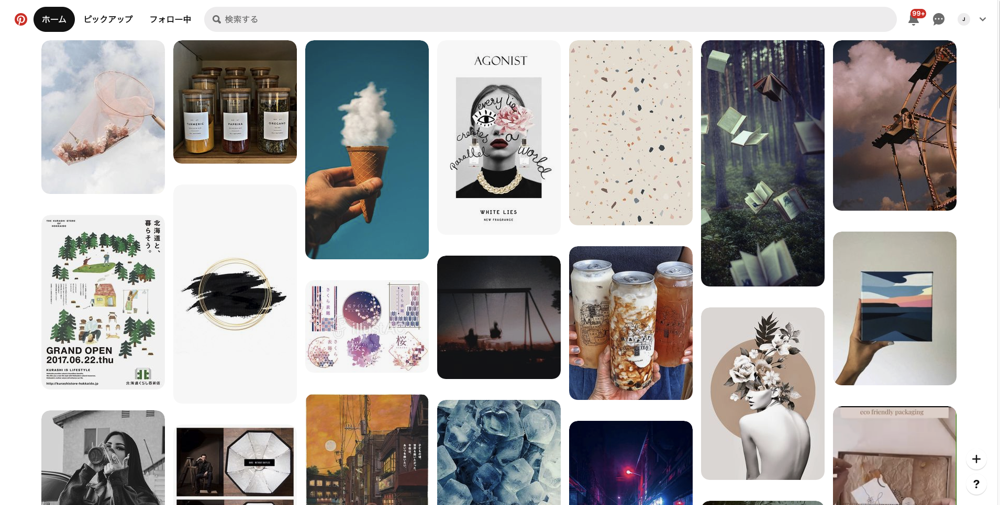
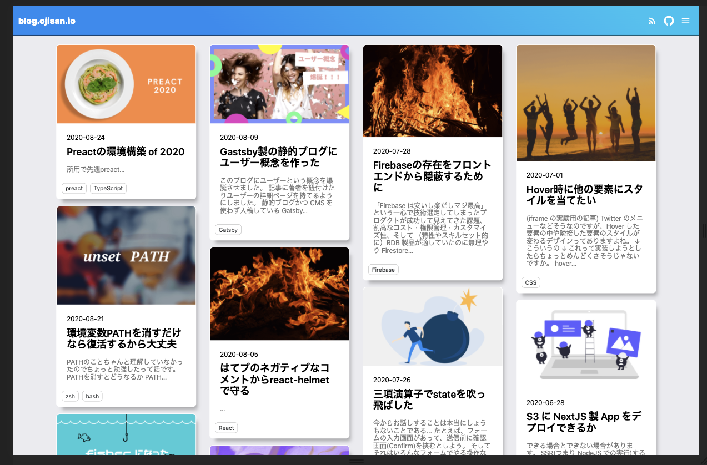

タイトルを見てめちゃくちゃなタイトルと思われるかもしれませんが、言いたいことは伝わると思います。 こういうレイアウトを作ってみましょうって話です。

実は筆者はこういうデザインなんといえばいいのか分かってなくてそういう表現になっています。 とはいえこれに正式な名称がありそうでもなく、ググっても pintarest like, Masonry like などといった言葉が出てきます。 ちなみに Masonry はこれを実現する jQuery プラグインです。
この UI はこのブログのトップページでも使われています。

この実装って正攻法でやると結構大変なのですが、簡易的な方法を知ったので紹介します。
column-count を使ったマルチカラム段組みで簡単に Masonry レイアウトができます！
何気に難しいピンタレスト UI
ピンタレストのトップページって画像を並べているだけなので簡単そうに見えるのですが、作ってみるとそうでもないことがわかります。 要素の高さが全部異なっています。 これをそのまま並べると縦幅に空白ができた状態で要素が並びます。
よくある解決策
Masonry のようなライブラリを使う
古典的な方法としては Masonry という jQuery プラグインがあげられます。 この UI が流行ったときはこのプラグインがよく利用されていたらしいです。（自分はその世代ではないので伝聞ですが） jQuery プラグインということは jQuery 環境を強いられるかというとそうでもなく、Vue や React の世界から jQuery を使うことも可能なので、jQuery 環境でなくても無理やり使える方法です。 ちなみに僕の初めての仕事はそれでした。 実現可能ではあるのですが、バンドルサイズを増やしたくない・依存を増やしたくなかったのでこのブログでの実装は見送りました。
flexbox を使った実装
縦に並べることが一つの方法として挙げられます。
高さを固定し要素をすべて 1 列に並べ(flex-direction: column)、溢れたら横の列に並べるとすれば良いです。
そしてその横幅は 100/列数 %(たとえば 3 列なら 33.3%など)とすれば定められた列数で masonry レイアウトが実現できます。
しかし高さを溢れさせて折り返すので、高さの制限をする必要があります。
その制限はスクロール領域を産むことにつながるので将来的にスクロール周りで困ることありそうだなと思ってこのブログでの実装は見送りました。
FYI: https://digipress.info/tech/pure-css-flexbox-masonry-sample/
grid を使う
その悩みは grid を使えば解決します。
FYI: https://w3bits.com/css-masonry/
ただしこのブログは Grid に対応されていないブラウザからも見られており、その環境での動作確認ができないこともあり、さらにはポリフィルも大変そうだったので実装は見送りました。
FYI: https://ics.media/entry/17403/
一番簡単な Masonry 対応
マルチカラムにすることです。
CSS3 には column-count というプロパティがあり、これを使うことで断組みレイアウトが簡単に実現できます。
マルチカラムの段組みにすることで自然と Masonry になります。
しかしこのままでは中途半端に折り返しが起きるみたいなトラブルも起きるはずなので（おそらくこのブログだと左から 2 列目の先頭が半分途切れてずれる）、それを防ぐ break-inside: avoid;を追加します。
このbreak-insideは生成されたボックスの途中でどう領域を区切るかを指定できます。
ここでは折り返しが起こらない avoidを指定します。
またこのブログでもあったのですがこのままでは最下段の余白が潰れると言ったことが起きます。
それはマルチカラム内部の要素を display: inline-block; にしたら解消します。
FYI: https://www.bricoleur.co.jp/blog/archives/4336
このブログでも同様の問題が起きていたのは @y_temp4 さんに修正してもらいました。 元のデザインがどうなっていてどう修正されたかはこの PR にまとまっているのでご覧ください。 @y_temp4さんありがとうございました。
最終的にはブログのトップページではこのような CSS になりました。
.cards {
margin: 0 auto;
padding: 5px;
width: 90%;
column-count: 4;
column-gap: 0;
}
.card {
margin: 16px;
margin-top: 0;
-webkit-column-break-inside: avoid;
page-break-inside: avoid;
break-inside: avoid;
box-shadow: 8px 12px 10px -6px rgba(0, 0, 0, 0.3);
display: inline-block;
}
マルチカラムで実現した場合の欠点
残念ながら上から下に要素が並んでいきます。 そのため時系列に左から右に並べるなんていったことはできません。 このブログでもそうなっています。
これは grid を使えば解決できます。
FYI: https://codepen.io/andybarefoot/pen/XVgmxZ?editors=0100
ただ この例の HTML を見比べると高さが足りず実は見切レていることがわかると思います。それは動的に位置計算を JS で行って調整する必要もあります。
FYI: https://medium.com/@andybarefoot/a-masonry-style-layout-using-css-grid-8c663d355ebb
そのため Grid を使えばマルチカラムで実現したときのデメリットである、並び順問題を解決できます。
まとめ
そのために本当に完璧な Masonry を作るなら Grid + JS の組み合わせになると思います。 とはいえ大変なのでただ並べたいだけといったような用途であればマルチカラムを使うのが一番楽だと思います。